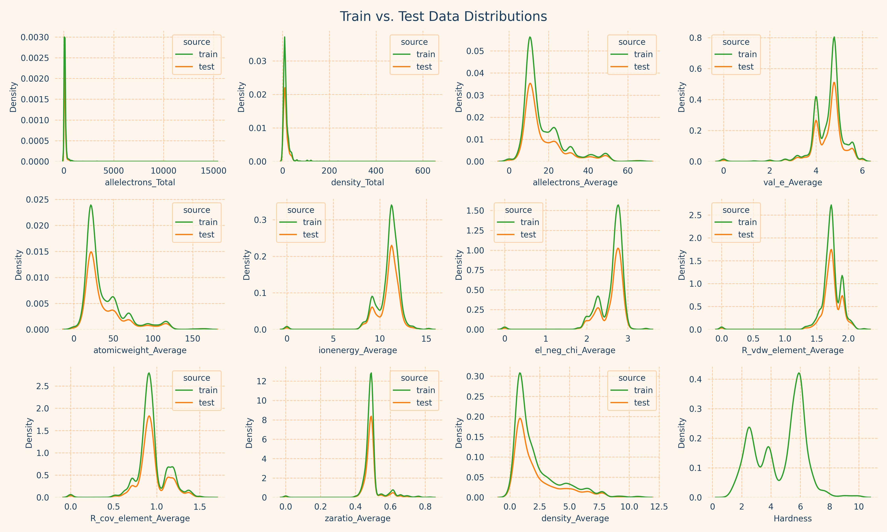

Mohssche Härte Regression
Data Science Projekt: Prädiktion der Mohsschen Härte von Mineralien auf Grundlage ihrer molekularen Eigenschaften.
TensorFlow, LightGBM, XGBoost, Scikit-Learn, Matplotlib, Seaborn
Dieses Projekt entstand im Rahmen einer Kaggle Competition. Ziel war es, mittels maschinellem Lernen die Härte von Mineralien auf Grundlage von 11 verschiedenen molekularen Eigenschaften vorherzusagen. Die Bewertungsmetrik, welche es zu minimieren galt, war die mittlere absolute Abweichung. Nach einer explorativen Datenanalyse mit einigen Visualisierungen verbringe ich den größten Teil dieses Projekts mit dem Vergleich verschiedener ML-Modelle. Ich vergleiche sowohl flache als auch tiefe Lernalgorithmen und erweitere sie jeweils durch Ensemble-Methoden wie Voting und Stacking. Ich komme zu dem Schluss, dass die besten Ergebnisse durch ein Stacked Deep Neural Net erzielt werden können, d. h. ein tiefes neuronales Netz, dass sowohl auf dem originalen Datensatz, als auch auf den Vorhersagen eines weiteren Models trainiert wurde. Ich habe zwei Kaggle Notebooks zu diesem Projekt bearbeitet: #1 & #2. Ich habe zu diesem Datensatz außerdem diesen interessanten Blog Post gefunden. Der Rest dieser Seite ist auf Englisch, da ich bisher keine Zeit gefunden habe, ihn zu überzetzen.
Exploratory Data Analysis
An explanation of each feature can be found in the paper Prediction of Mohs Hardness with Machine Learning Methods by Joy C. Garnett:
| Variable | Description |
|---|---|
| allelectrons_Total | Total number of electrons |
| density_Total | Total elemental density |
| allelectrons_Average | Atomic average number of electrons |
| val_e_Average | Atomic average number of valence electrons |
| atomicweight_Average | Atomic average weight |
| ionenergy_Average | Atomic average ionization energy |
| el_neg_chi_Average | Atomic average Pauling electronegativity of the most common oxidation state |
| R_vdw_element_Average | Atomic average van der Waals atomic radius |
| R_cov_element_Average | Atomic average covalent atomic radius |
| zaratio_Average | Atomic average number to mass ratio |
| density_Average | Atomic average elemental density |
| Hardness | Mohs hardness (target) |
We can check for data drift by checking, whether or not the feature distributions of the test data differ from those of the training data:
- No data drift – train and test set distributions are very much aligned
- Some features are heavily right skewed. allelectrons_Total & density_Total in particular seem to follow a power-law distribution
- Others are moderately left skewed
- Most variables including the target are multimodal (their distributions have multiple peaks)
- A lot of intercorrelation amongst the features –> problematic for inference
- allelectrons_Average & atomicweight_Average correlate nearly perfectly –> we can probably drop one
- Only a few moderate correlations with the target:
- allelectrons_Average/atomicweight_Average -0.4
- density_Average -0.36
- The others have weak negative correlations with the target, interestingly no positive correlations at all
- el_neg_chi_Average has close to no correlation at all with the target
Modeling
My main approach here was to explore and compare different machine learning models and to stack them on top of each other to create better models. I used some shallow and some deep learning, some voting and some stacking. I summarized my results in a plot at the end (skip to Evaluation).
Shallow Learning Algorithms
First I created some functions that help evaluate each model uniformly. Then I tested 5 different regression algorithms:
- LR: Linear Regression
- SVM: Support Vector Machine
- XGB: Extreme Gradient Boosting
- LGBM: Light Gradient Boosting Machine
- RF: Random Forest
- Huge difference between linear regression and the others
- Some difference between the others as well
- The winner is Support Vector Machine Regression
- Very impressive how fast LGBM and XGB are, considering that their errors are not much worse than that of SVR
Shallow Learning + Voting & Stacking
Next up, I used the previous learning algorithms as base estimators to build bigger models, hoping to that these ensemble models would show an improvement over their individual parts. I did not include Linear Regression in the list of base estimators, due to its performance. I tried 3 approaches:
- Voting Regressor
- Stacking Regressor with Linear Regression as final estimator
- Stacking Regressor with Support Vector Machine Regression as final estimator
- Voting Regressor is more or less the average of its base estimators – definitely no improvement!
- Stacking with LR is not better than its best base estimator SVM but more time consuming
- Stacking with SVM the best model so far – apparently the choice of final estimator matters a lot! – unfortunately it is also the most time consuming to train
Deep Learning
I used a Dense Neural Net architecture with 2 deep layers with 16 and 32 neurons respectively and a final output layer with a signle neuron.
- Most time consuming model yet
- Error is pretty good, but still slightly worse than of Stacking with SVM
Deep Learning + Stacking
Finally I wanted to see how much I can improve the Deep Neural Network by feeding it predictions of other models. All of these predictions were generated through KFold splitting to avoid data leakage. I saw some people neglect to do this and then get inflated scores as a result that don't reflect their final test scores, so I do recommend it. I tested 3 different approaches:
- Add only predictions from the current best estimator: Stacking with Support Vector Machine
- Add predictions from only the base estimators
- Add predictions from both
- Even though the last one has 5 more features than the plain DNN and as a result more than 10% more trainable params, the training time is almost the same
- All three perform better than any of the previous models
- No significant differences between them (within error) – to be expected since the engineered features are highly correlated, leading to diminishing returns after having added one of them
Evaluation

Notes:
- The runtimes are all inflated by the KFold cross validation. Each model ran 5 times on 80% of the data (320%).
- On the other hand, the runtimes of the Deep Stacked algorithms only include the fitting of the neural net itself, but not the creation of the extra features through other algorithms. Technically, these would need to be included, in order to gauge the runtime of the entire ML pipeline.
Observations:
- Deep learning yields better results than shallow learning
- Voting is bad
- Stacking is great – but the final estimator matters
- Deep Stacking is best – but also the most expensive